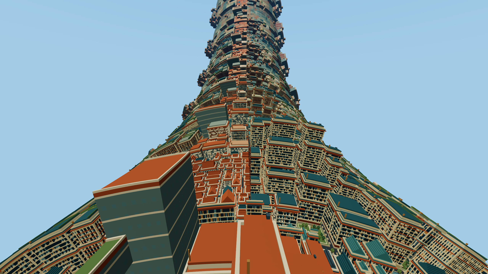

2026-11-05 · Native Firefox 159 · macOS · 2560 × 1440 framebuffer · Medium lighting · shadows off
Decision: keep texture baking off by default. Firefox exposes measurable FPS differences, but this implementation reduces Copper's FPS by about 8%. Nature's apparent gain becomes small in the independent repeat. Keep the conservative 8 m preset available in graphics settings.
84 timed blocks · 57,722 ordinary frames · 9,657 GPU-timed frames · zero WebGPU errors · zero pending terrain frames.
Each value pools the elapsed frame intervals from two static horizon and two turning blocks. Percentages compare with Off from the same world and run. No instantaneous-FPS averaging.
| World | Off FPS | 8 m FPS | 16 m FPS |
|---|---|---|---|
| Aether | 111.72 | 109.24 (-2.21%) | 108.24 (-3.11%) |
| Nature | 113.80 | 118.65 (+4.25%) | 118.54 (+4.16%) |
| Copper | 110.72 | 101.98 (-7.90%) | 102.27 (-7.63%) |
Every label below executes the same Off configuration, with the same order, camera path and warmup. It measures order/session variation; its spread is not a confidence interval and must not be subtracted as a correction.
| World | Off FPS | 8 m FPS | 16 m FPS |
|---|---|---|---|
| Aether | 118.62 | 117.84 (-0.66%) | 117.46 (-0.98%) |
| Nature | 119.08 | 119.58 (+0.42%) | 119.79 (+0.59%) |
| Copper | 113.16 | 111.84 (-1.17%) | 112.35 (-0.72%) |
The largest absolute pooled label differences are Aether 0.98%, Nature 0.59% and Copper 1.17%. Copper's main-run loss is substantially larger. Absolute FPS differs between runs; only within-run comparisons are used.
Nature was reloaded and warmed independently because its first result was positive. The 8 m change shrank from +4.25% to +0.83%, close to the 120 Hz presentation ceiling. This does not establish a useful general speedup.
| World | Off FPS | 8 m FPS | 16 m FPS |
|---|---|---|---|
| Nature repeat | 118.31 | 119.29 (+0.83%) | 119.25 (+0.79%) |
| World | Off FPS | 8 m FPS | 16 m FPS |
|---|---|---|---|
| Aether / horizon | 111.59 | 109.19 (-2.15%) | 108.11 (-3.12%) |
| Aether / turn | 111.84 | 109.30 (-2.28%) | 108.37 (-3.11%) |
| Nature / horizon | 112.44 | 119.83 (+6.58%) | 118.50 (+5.39%) |
| Nature / turn | 115.17 | 117.46 (+1.98%) | 118.58 (+2.96%) |
| Copper / horizon | 110.35 | 104.76 (-5.06%) | 102.93 (-6.72%) |
| Copper / turn | 111.10 | 99.20 (-10.71%) | 101.62 (-8.53%) |
Values below pool the main run. CPU and GPU overlap; adding them does not predict FPS. Firefox CPU samples are quantized to whole milliseconds. GPU spans measure the frame's pass envelope, not GPU busy time.
| World | Mode | CPU ms | GPU ms | Frame p95 ms | Draw calls | Submitted triangles |
|---|---|---|---|---|---|---|
| Aether | off | 3.647 | 3.402 | 16.66 | 183.7 | 1.896 M |
| Aether | edge8 | 4.030 | 3.426 | 16.68 | 241.7 | 1.843 M |
| Aether | edge16 | 4.093 | 3.279 | 16.66 | 263.7 | 1.851 M |
| Nature | off | 2.660 | 1.822 | 9.18 | 33.2 | 0.692 M |
| Nature | edge8 | 2.905 | 1.823 | 8.80 | 57.1 | 0.669 M |
| Nature | edge16 | 2.938 | 1.712 | 8.75 | 67.5 | 0.636 M |
| Copper | off | 3.731 | 3.917 | 16.66 | 159.7 | 2.535 M |
| Copper | edge8 | 4.188 | 4.225 | 16.68 | 211.6 | 2.441 M |
| Copper | edge16 | 4.201 | 4.172 | 16.68 | 219.2 | 2.408 M |
For Copper, 8 m reduces resident faces by 8.6% and submitted triangles by about 3.7%, but increases average draw calls from 160 to 212 and CPU time from 3.73 to 4.19 ms. Geometry reduction alone is not a reliable FPS predictor. Separate baked pages/materials and atlas access add costs.
The 8 m atlas occupies 32 MiB of GPU texture storage plus a 32 MiB CPU backing array. With geometry page allocation included, the earlier matched geometry measurements found net extra GPU storage of 27.5 MiB (Aether), 36.5 MiB (Nature) and 32 MiB (Copper). See the Chrome and implementation report; these are allocation sizes, not an OS-wide GPU memory reading.
All restored Off images and all identical-code control images are pixel-exact. The following percentages are horizon pixels whose largest RGB-channel difference exceeds 2/255, over the whole framebuffer. Baking is not visually lossless; curved interpolation and silhouettes can change.
| World | 8 m changed pixels | 16 m changed pixels | Maximum RGB difference, 8 / 16 m |
|---|---|---|---|
| Aether | 0.1668% | 0.1735% | 147 / 182 |
| Nature | 0.0922% | 0.1934% | 108 / 111 |
| Copper | 0.0603% | 0.0957% | 128 / 128 |
Global Settings → Graphics → Distant Terrain LOD exposes the baking toggle, surface size, texture detail, start distance, cache and filtering. Settings persist and Reset Recommended restores: Off / 8 m / 1 texel per selected LOD cell / 384 m / 32 MiB / Sharp.
Firefox compared Off, 8 m and 16 m. The earlier Chrome matrix also compared double density and smooth filtering; neither supplied a reason to change the optional preset. The 384 m distance and 32 MiB cache were held fixed, not proven globally optimal. This is coplanar color baking; it does not bake depth/normals or generate a mip chain.
Fixed 1280 × 720 CSS iframe, DPR 2, scale 1; 64 px² source subdivision, 2048-chunk range, 512 MiB source budget and 160 MiB geometry budget. Local offline terrain, ordinary game frames, physics and HUD active. Each world uses Off → 8 m → 16 m → 16 m → 8 m → Off. Each configuration waits for complete source generation and eight seconds without source/publication changes. Initial 30-second warmup and each block's first 1.5 seconds are excluded; the next six seconds are measured.
One in six measured frames samples GPU timestamps. PNG encoding, uploads and transitions are outside timed blocks. The page remained foreground; no build or typecheck ran during sampling. Firefox exposes empty adapter identifiers. No browser timer, VSync or security settings were changed. These are measurements on one computer, not a Chrome-versus-Firefox speed ranking or evidence for every GPU, high lighting, shadows, cold start or moving through streaming terrain.
Start node client/tools/texture-bake-receiver.mjs client/src/dev/results/texture-bake-firefox-2026-11-05 and Vite. Open client/tools/texture-bake-browser.html through Vite's /@fs/ route. Use ?repeat=1 for all three worlds, add &control=1 for identical-code controls, or use ?world=nature&repeat=1 for a single-world repeat. Analyze each capture with python3 client/tools/analyze-texture-bake.py CAPTURE_DIRECTORY.
Client typecheck and whitespace validation passed after the benchmark changes. Production behavior and defaults are unchanged from the prior implementation, whose 114 relevant tests and production build passed. The local receiver and Firefox test tab were closed after capture.
Decision, validation and all pooled results.
